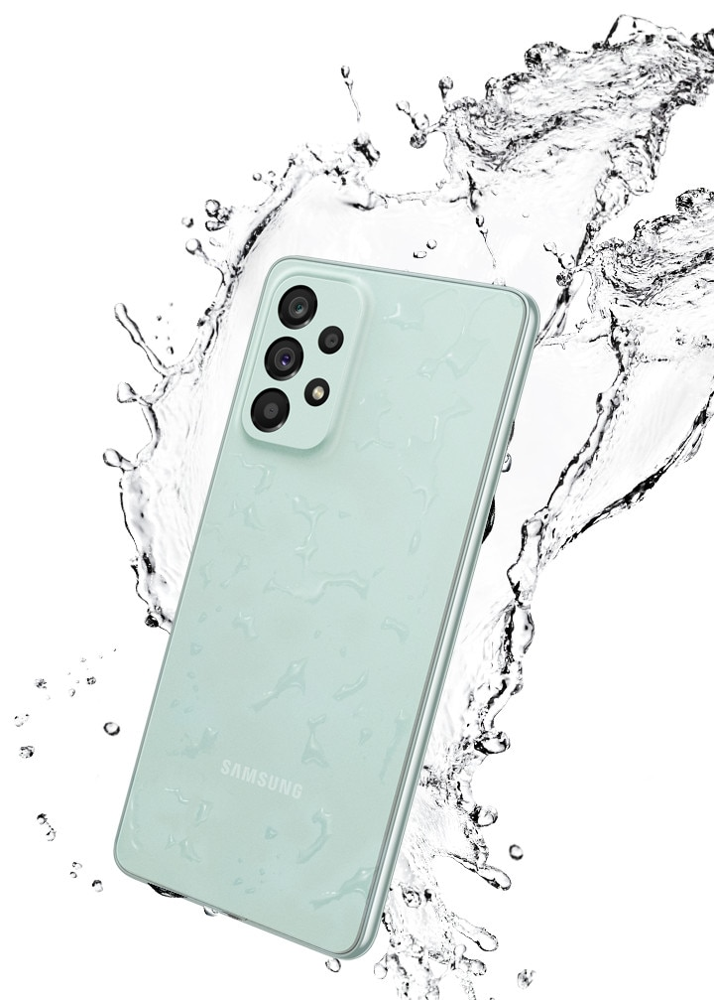
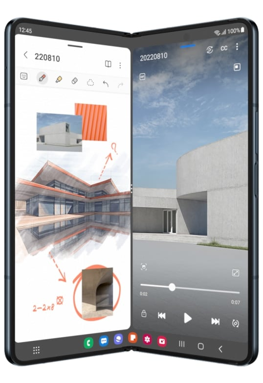
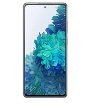
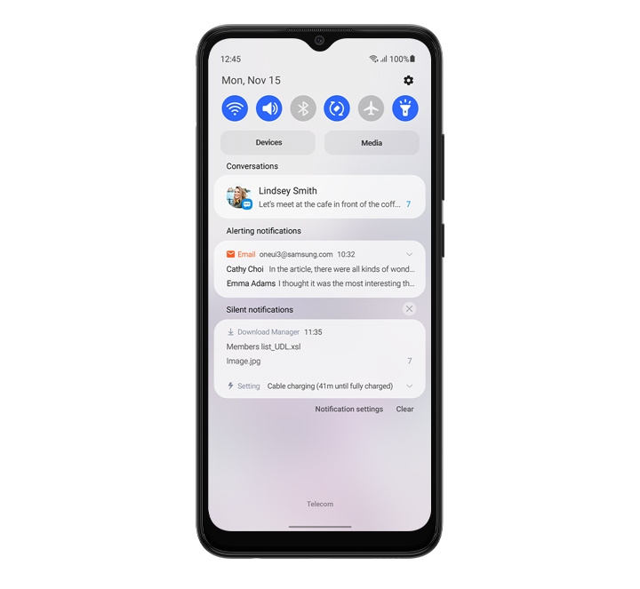

Galaxy A73 128 GB
Multimedya alanında çok güçlü
Artık her şeyi daha fazla yapabilirsiniz. Snapdragon® 778G 5G’den güç alan Galaxy A73 5G’nin sunduğu profesyonel seviyedeki oyun, yapay zeka destekli daha akıllı performans ve üstün çekim deneyimleri, mobil multimedya yaşam tarzınızı tamamen değiştiriyor. Daha fazlasına ihtiyacınız olduğunda ise RAM Plus özelliği ile ekstra sanal RAM sağlayarak size güç veriyor.
Hatıralarınızı silmeyin
Hepsi bir arada. 128GB/256GB dahili hafızanın yanı sıra 1TB’a kadar MicroSD kartı desteği ile değerli anlarınızı saklamak için her zaman yeriniz olur.
Galaxy S22 Ultra

Not alma özellikleriyle takdir toplayan yeni bir görünüm
Not almanın gücünü yaşayacağınız Galaxy S22 Ultra ile tanışın. İnce ve cesur parlak çerçevesi, şık bir simetri sağlamak için bu haddelenmiş şekli sarar. Doğrusal kamerası, yerinde süzülüyormuş gibi görünen aynalı lens halkalarıyla vurgulanır.
Galaxy’nin şimdiye kadarki en hızlı çipi
Telefonunuzun hemen hemen tüm özelliklerine üst düzeyde güç katan 4nm çip ile efsanevi gece çekimleri, gündüzden geceye inanılmaz netlikte fotoğraflar ve optimum seviyede sizi zafere götüren bir mobil oyun deneyimi yaşamak mümkün.
Galaxy Z Fold 4
KATLANABİLİR FORM Öne çıkar, dikkat çeker, katlanır.
6,2 inçlik Kapak Ekranı sayesinde, telefonu tek elle tutarken bile pek çok işlemi yerine getirmeni mümkün kılar.1 İki elini birden kullandığında ise 7,6 inçlik Ana Ekranı ile yapabileceklerinin sınırı yok.2 Peki hiçbir elini kullanmak istemezsen? O halde telefonu bir yere bırak, doğru açıyı bul, serbest kalan ellerinle işlerini hallederken cihazın seni beklesin.
Zarafetle tamamlar
Eşsiz ve çarpıcı şeklinin doğal klasik tonlarla zarif kombinasyonu ile onu her açtığında dikkatler üzerine çekilir. Graygreen, Phantom Black veya Beige renkleri arasından seçim yapabilirsin.Graygreen Phantom Black Beige
Galaxy S20 FE
Gökkuşağını kıskandıran renk tonları
Telefonunuzu hemen hemen elinizden hiç düşürmezsiniz, bu nedenle telefonunuz tarzınıza kusursuz bir şekilde uyum sağlamalıdır. Göze çarpan ve cesur tonlardan ince ve klasik tonlara kadar oldukça çeşitli pürüzsüz mat kaplamalı popüler tonlardan dilediğinizi seçin.
Tüm gözler Sonsuz-O Ekran üzerinde
Görüntü kalitenizi yükseltin. 6.5" Full HD+ Sonsuz-O Ekran, düz kenarlarının etrafında neredeyse hiç fark edilmeyen bir çerçeveye ve çok küçük bir kamera deliğine sahiptir. Böylece, sizi daha çok saran bu ekran sayesinde oyun oynamak, çevrim içi yayınları izlemek ve görüntülü çağrı yapmak artık çok daha eğlenceli.
Galaxy A03
Daha fazlasını görmenizi sağlayan Sonsuz V-Ekran
6.5'' HD+ Sonsuz-V Ekrana sahip Galaxy A03, geniş ekranıyla keyifli bir deneyim sunar. Böylece sevdiğiniz videoları ve canlı yayınları rahatlıkla izleyebilir, oyunlarınızın tadını çıkarabilirsiniz.
Ergonomisi kadar şıklığıyla da sizi etkilemeye hazır
Galaxy A03, modern tasarım estetiğini çapraz çizgili ışık deseni ve arka kısımdaki yumuşak mat yüzey ile bir araya getiriyor. Yumuşak hatlarıyla elde rahat bir tutuş sağlar ve ekranda gezinmeyi kolaylaştırır. Siyah veya Mavi renklerden dilediğinizi seçin.